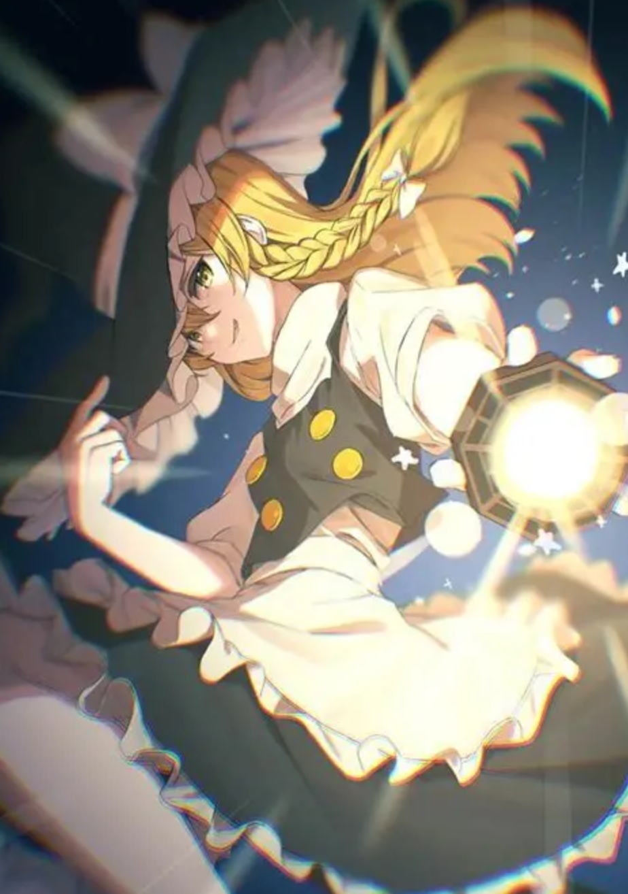

雾雨魔理沙是东方Project系列官方作品的第二主角，也是东方系列除博丽灵梦外的另一代表角色。初登场作品为东方封魔录，担任封魔录的四面Boss；新作初登场作品为东方红魔乡，担任红魔乡的自机。
与灵梦作为游戏的初始界面类似，魔理沙作为整数作游戏图标已经成为东方系列的惯例。她的种族是人类，职业是魔法使。
虽然看上去很别扭[风神录设定文档]，但她容易亲近、有人情味[幻想揭示板]，性格争强好胜[永夜抄Manual]不服输[萃梦想设定文档]，和她一起会很有意思，让人心情愉快[史纪]。虽然她稍有些扭曲[地灵殿设定文档]、乖僻[红魔乡设定文档]、爱戏弄人[史纪]和心术不良，本性却很正直[萃梦想设定文档]。
她虽然头脑很灵活[红魔乡Manual]，态度看起来也很轻浮，但其实是个爱操心、认真的努力家[大东方展]类型的人。
从东方梦时空开始，魔理沙一直作为大部分官方游戏可使用的自机角色登场，在所有官方出版物中也都是主角或常驻角色。她贯穿了东方系列的几乎整个故事线，是东方剧情中最重要的角色之一。
魔理沙经营着位于魔法森林内的“雾雨魔法店”，她的家雾雨邸就是店铺。不过，稗田阿求从没见过她工作的样子[史纪]。
要进入魔法森林并找到这家店十分困难。[史纪]
她平日里埋头于魔法研究，觉得研究魔法时没有其他人比较好[永夜抄设定文档]。
不研究魔法时她喜欢热闹，过着自由的生活[永夜抄设定文档]，经常出入博丽神社。尽管经常出门[永夜抄设定文档]，她却自认为是个家里蹲[兽王园]，博丽灵梦也曾劝她多出出门[妖妖梦]。
她比较怕冷。[大东方展]
她有收集癖，且在年年加重[妖妖梦设定文档]。她经常小偷小摸。
她会使用魔法扫帚、迷你八卦炉、自制魔导书等等道具。
魔法扫帚是她自作主张地认为对于魔法使来说是必须的乘坐物。
迷你八卦炉是她最大的武器，同时也是她进行魔法实验和料理的必需品。[史纪]
从在新作的首次登场开始，她就有了“だぜ”的口癖。[红魔乡]
魔理沙拥有使用魔法程度的能力，早期也被描述为操纵魔法程度的能力和主要拥有使用魔法程度的能力。
她擅长使用光与热的魔法，注重魔法的火力。
不过，魔理沙是属水的。[香霖堂、凭依华]
她的魔法虽然是只有破坏物品程度的魔法，但是单纯论破坏力的话在人类之中是非常强大的。
她使用的魔法弱点很少，无论对人还是妖怪都很有效，因此她也常常接受降伏妖怪的委托。
在符卡规则之下，魔理沙那华丽的魔法被发挥得淋漓尽致。
尽管是华丽无比的魔法，背后却是朴实无华的启动方式。
她会在魔法森林中采集原料、加工，然后以不同的方式处理，寻找可以启动魔法的方法。[史纪]
她能使用依靠漂浮在周围的星星碎片的符卡，大气中的星之成分会左右其强度。[GoM]
她能使用火系魔法发出火焰旋涡[GoM]，还擅长让树叶随风飘舞的木系魔法[GoM]。
此外，她还会用召唤温泉地脉的魔法和炼丹魔法，前者一度是她一段时间使用的最大魔法。[妖妖梦Manual]
她自认为可以靠魔法变身，只是有风险。[交叉评论]
她对周围的力量变化很敏感。
她曾感觉出纯狐力量并非魔力。[绀珠传]
她还曾感觉到矢田寺成美背后魔力涌出来的方式很不寻常。[天空璋]
她拥有速度和力量，但却不擅长体术。移动很迅速，无奈招数迟钝。她通过在魔法上增加必要以上的力量来弥补。[萃梦想设定文档]
虽说主要使用魔法，但是她力气很大，甚至曾抱着石头婴儿与牛崎润美战斗，并被润美夸赞臂力惊人[鬼形兽]。
她体力远超一般人，是鬼形兽的三个自机中唯一一个打败骊驹早鬼后没有感觉到疲惫的角色[鬼形兽]。
她能闻出血的味道等“战场的味道”。[茨歌仙]